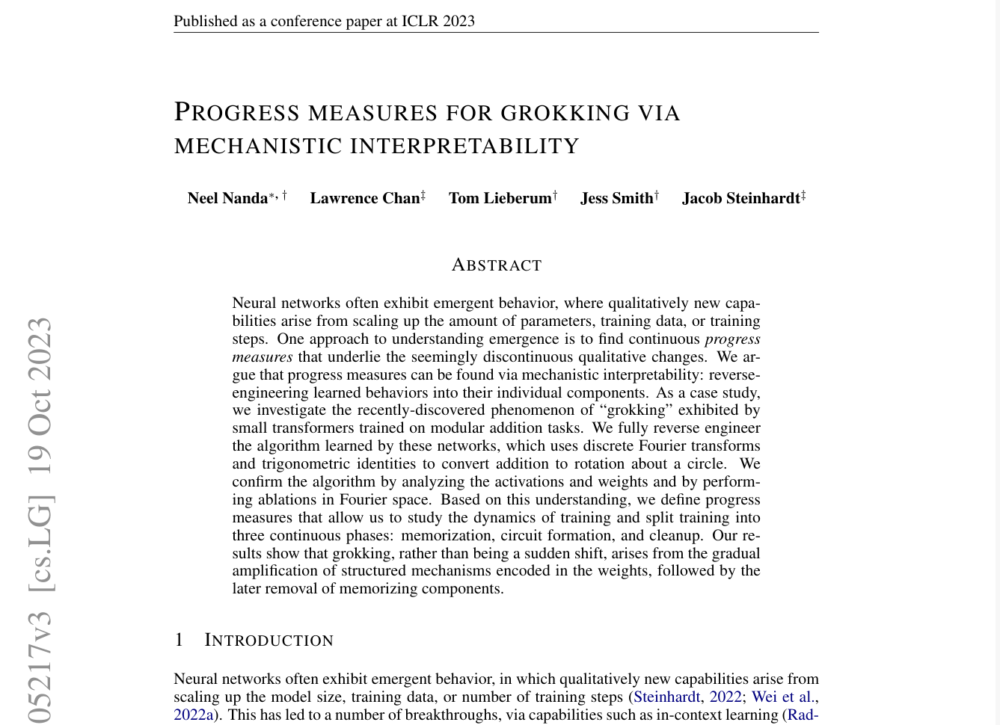

Grokking models to learn algorithms
Team: p̶r̶o̶m̶p̶t̶ circuit engineers
Authors
- Kyrylo Shyvam Kumar (2021101080)
- Bhargav Srinivas (2021101065)
- Vansh Garg (2021111006)
Our Inspiration
Interpreting Addition

Analysis in paper
Closeness of positional encodings:- The cosine similarity shows some closeness in positional encodings.
- Any possible difference is eliminated at the MLP (after attention block). So final prediction is position invariant to inputs.

Analysis in paper
CLS token pays equal attention to both of the positions (attention ~ 0.5).

- Periodic patterns in attention score
- Periodicty in activations of FFN:.
- Fourier decomposition of embeddings: Periodicity in activations implies that there are few important frequencies, and we can perform Fourier decomposition to get them. Also activations will be sparse in Fourier basis.

- Actual algorithm learnt:
What's next?
- We have replictated paper's results.
- And decided to generalize this to other algorithms like sorting.
- However sorting algorithm is non-trivial and have chosen easier tasks on the wau to solve it.
Grokking Challenges
Task Complexity:- Max of 5 numbers involves output consisting of any 5 inputs. So model needs only to learn copying of information properly.
- Sorting is a complicated task. Despite it requiring copying of information, the algorithm itself is non-trivial.
- Max generalizes before overfitting and grokking.
- Sorting never reaches perfect accuracy. Can be mitigated with bigger datasets.
- Data Distribution: Addition with modulo is defined over cyclic group, leading to uniform distribution of output in general.
- Operations like max/median output biased distribution for random input. Bigger numbers have a higher probability to occur in output. So, there existed some outputs for which no backpropagation happened.
- We had to augment dataset with samples which had all numbers small and thus had max < 20.
General Observations
- Sorting outperforms Median: sorting actually predicts five numbers, which acts as extra training signal (or CoT) helping model to train.
- Internal Dimensionality of Task: Median benefits from larger dimensions (dim=512), while addition from smaller.

Max Transformer
-
Problem set up:
- Decoder Transformer Model is given 5 numbers, and is predicting next token.
- Numbers are in range of 1-100.
- Training Loss:

- Position Embeddings: Similar across permutations, perpendicular to CLS. Demonstrates positional independence.
- Activations (Permutations): Highly similar, showing positional invariance.
- CLS Attention: Focuses on the maximum element, regardless of position. Suggests Q-K circuit finds the max position, OV circuit convert position to value.
Circuit Analysis: the attention values
- Elements closer to diagonal have smaller absolute difference and evaluate to smaller attention.
- Head Dimensions vs. Input: We plot all 32 dimensions of a single head, and specifically how it (value in ith dimension) varies with input.
- Key Vectors: Dimensions highly correlated, resembling straight lines. QK circuit might be representable as a linear equation.
- Linear Regression of Neurons: Replacing neurons with y = mx + c (via linear regression) reveals attention patterns.
Unnormalized attention:
a =
a = 0.61x - 32.2 = 0.61(x - 52.7)
Actual attention = softmax(0.61(x - 52.7)). 0.61 acts as temperature. 52.7 is near the data center.
Regressed features of queries
Regressed features of keys
- Regressed Attention Scores: Similar to original, original was less smooth.
- OV Circuit: Copies the value at the attended position. Accurate except for the under-trained 0-20 range.
- Copying Robustness: Tolerates 20-30% noise, indicating redundancy.
- Final Max Algorithm:
- QK Circuit: Converts inputs to numbers for attention calculation (y = mx + c).
- OV Circuit: Converts attended value to output token.
Median Transformer
- Loss Plots:

- Interpretation: Difficult to interpret.

Features vs Input

Sort Transformer
- Loss curves: Even here generalization happens before grokking.

Position Embedding Analysis (Sort)

- Position embeddings similar for first five positions, demonstrating positional invariance.
Activations across Permutations (Sort)
- Neuron activations invariant to input permutations.

Attention Plots (Sort)
- Heads consistently attend to the maximum element's position.
Effect of Current Number (Sort)
CLS token attends to inputs and 0, not previous tokens. Prediction is a function of input and current value. Model seems to predict the correct number for the position, suggesting positional embeddings are crucial.
Q-K Analysis (Sort)

- Attention score variations are more complex than straight lines, possibly polynomial. Further analysis needed.
Pattern of attention scores

- OV Robustness (Sort): Tolerates 30-40% noise.

Our Conclusions
- Interpretted max transformer.
- Formulation of problem is important: Sorting network predicts median better than network trained for it.
- Model learns its rank in vocabulary of numbers.
- Model's output to biggest number, is indepenent of its predction to let's say smallest number.
References
[1] Power et al. (2022). Grokking. [2] Nanda et al. (2023). Progress Measures. [3] Charton (2023). Learning GCD. [4] Gromov (2023). Modular Arithmetic. [5] Palumbo et al. (2024). 2-SAT Solver. [6] Millidge (2022). Grokking 'grokking'. [7] Charton (2022). Linear Algebra. [8] Chughtai et al. (2023). Universality. [9] Nanda (2022). 200 COP in MI.